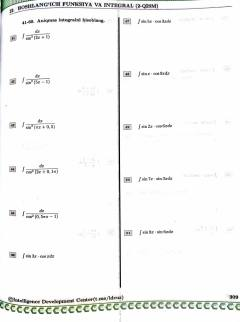

I3Boshlang'ich funksiya va aniqmas integralga oid misollar to'plami.
Ushbu qo'llanma boshlang'ich funksiya va aniqmas integral mavzulariga oid turli misol va masalalarni o'z ichiga oladi. Kitobda integral hisoblash amallari bo'yicha amaliy topshiriqlar va ularning yechimlari keltirilgan. Materiallar Intelligence Development Center tomonidan tayyorlangan.